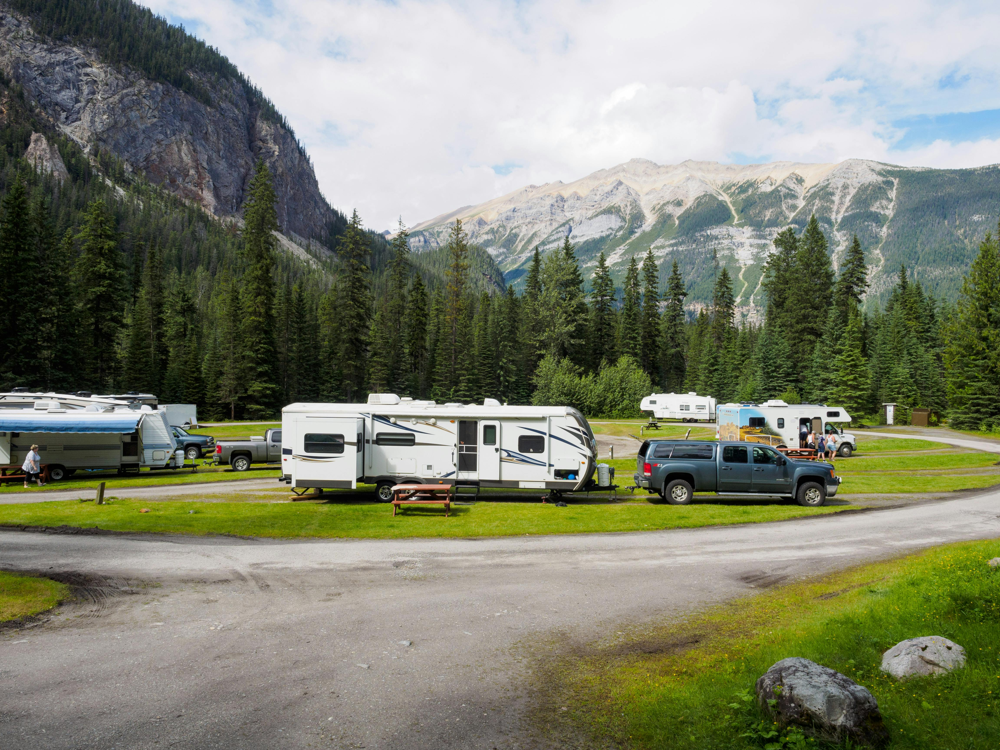

Home
Home feels right. My home is Kansas City, Missouri. Have you been? It's the best sport city there is right now! Go Chiefs!
I moved to Kansas City when I was 7 years old. So I know my way around pretty well. Kansas City is known for its BBQ,
Breweries, Country Club Plaza, Museums, and much more. I never thought I would leave Kansas City, but it was time to take a
risk and see what else life had to offer.
About Me
I was born in Cuba. Yes, the small little country 90 miles south of Florida. I lived there till I was 7 years old.
So I flew across country early in life. Which is why I am probably so adventures. It was hard to learn a new language,
but after some years I was capable of speaking fluent. Many years later in my teens, I started to travel to other states and became inlove
with going on trips with friends. Never did I think I would have the opputunity to work from home and travel the United States.
Locations

After Covid era started getting a bit better, I was able to buy a 5th-wheel trailer. It is 42 feet long, and I call it
my mini-mansion. I decided it was time to go travel to wherever I wanted. I traveled for 3 years while I worked from home.
I was able to travel to many states such as California, Colorado, Kansas, Florida, Oregon, Florida, South Carolina, North Carolina,
Texas, and Arizona. It was the best decision I ever made.